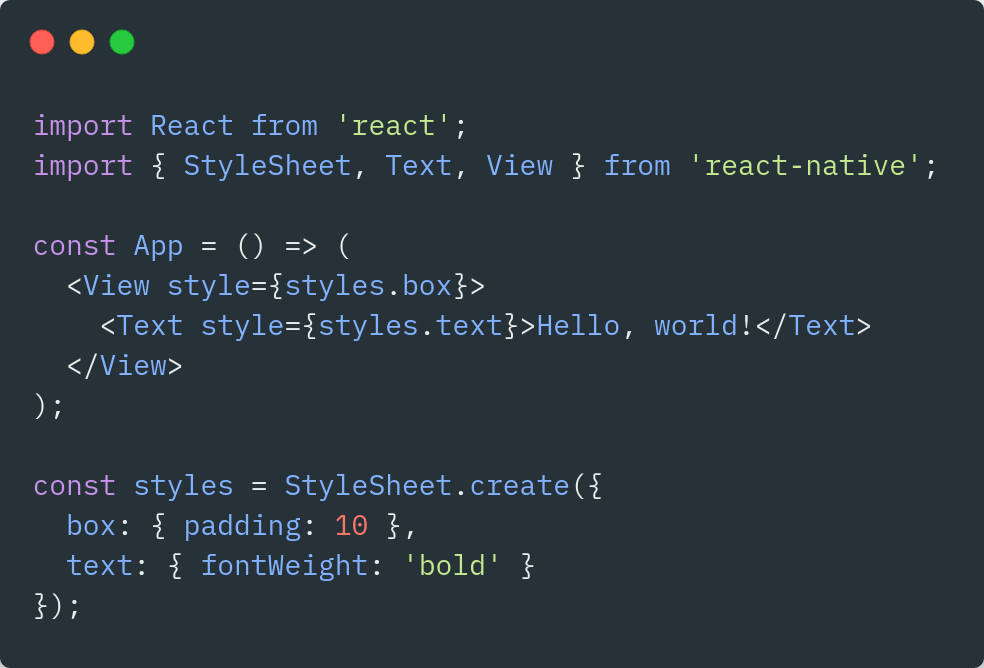

Shower Presentation Engine
Yours Truly, Famous Inc.
Partager du code entre les projets web et natifs avec React et une
architecture monorepo
React & React-Native Bordeaux Meetup
Mai 2021
Qui suis-je 👋
<Person
fullName="Stéphane Richin "
age={29 }
city="Lyon "
company="Novaway "
role="Lead front-end developper "
/>
Alors ...
multirepo ou monorepo ?
Point-virgule ?
Les problématiques d'une architecture multirepo
🙈
Plusieurs installations
Plusieurs maintenances
Plusieurs configurations (linter, CI/CD, .env, etc.)
Potentiellement une grosse perte de temps
Qu'est-ce qu'un monorepo
🤔
un monorepo est une stratégie de développement où le code de
plusieurs projets est stocké dans un seul et même repository
Wikipedia ❤️
Exemple avec
Exemple avec
Exemple avec
Les avantages de ce type d'architecture
Pourquoi un monorepo ?
🥰
Un seul environnement de développement
Une seule structure
Réduit la quantité de code répété
Le partage et la réutilisation de code sont infiniment plus faciles
Le refactoring à grande échelle devient plus simple
Pour une stack entièrement JavaScript l'avantage est décuplé : partage
de code entre le(s) client(s) web/natif et le serveur Node
Pourquoi un monorepo ?
🥰
Partage des configurations des différents outils (Jest, TypeScript,
ESLint, Prettier, etc.)
Gestion des dépendances plus simple
Les commits multi-projets
Une seule review
Un team work hautement amélioré
Quelques points d'attention 📌
Le dépôt peut devenir (très) gros
L'intégration d'un nouveau développeur peut être plus difficile
Une culture parfois incompatible (par ex. entre les équipes clients et
serveurs)
La mise en place d'un CI/CD n’est pas anodine à mettre en place
Demande d'être plus rigoureux lors des revues de code
Potentiellement un problème de sécurité avec l'accès à toute la
code-base
Limitations techniques du système de versionning
Les principaux outils ⚙️
yarn (v1)
API Workspaces
Workspaces are a new way to set up your package
architecture
lerna
A tool for managing JavaScript projects with multiple
packages
utilisé par Facebook (CRA & Jest), Babel, Strapi ou encore
Cloudflare
Les principaux outils ⚙️
pnpm
pnpm has built-in support for monorepositories
packages configurable via le fichier pnpm-workspace.yaml
nx
a suite of powerful, extensible dev tools to help you
architect, test, and build at any scale
basé sur des plugins (@nrwl/angular, @nrwl/node,
@nrwl/react, etc)
Yarn et l'API Workspaces
Quelques règles 🚀
Un fichier package.json doit être défini à la racine du
projet
Le package.json devra contenir la clé private à
true ainsi que les différents workspaces
Quelques règles 🚀
{
"name": "my-app",
"private": true,
"workspaces": ["packages/admin", "packages/api", ...]
// ou "workspaces": ["packages/*"]
}
Quelques règles 🚀
Chaque package doit contenir également son propre
package.json
Le package.json devra contenir les clés name et
version afin qu’il puisse être défini comme module du workspace
Quelques règles 🚀
{
"name": "@my-app/ui",
"version": "0.0.1",
"dependencies": {,
"@my-app/core": "0.0.1",
...
}
}
Workspaces : les commandes de base 🚀
Lancer un script d'un package :
yarn workspace @my-app/web start
Ajouter ou supprimer une dépendence a un package :
yarn workspace @my-app/web add/remove react-native
Ajouter ou supprimer une dépendence global au workspace :
yarn add/remove react-native -W
Il est possible de créer un script npm depuis le package.json du
workspace
yarn web:start => yarn workspace @my-app/web start
React et le multi-plateforme 🚀
Dans le cadre d'une application React, une architecture
monorepo va permettre de partager et de maintenir plus facilement
les composants (ainsi que les hooks , le
state management ou encore le routing ) entre les
différents packages
Exemple avec l'application devhub
Une API commune entre 💖
react-native-web
Développée par Nicolas Gallagher, cette librairie permet d'utiliser les
API de react-native ... en web 🔥

Du partage sur 🤯
react-native-windows 😲
React Native for Windows + macOS
Microsoft maintient très très activement le portage de
react-native
sur Windows et macOS
Exemple d'architecture 🥰
- packages
- mobile
- storybook
- ui
- web
...
=>
Pour résumé, une application React
Librairies multi-plateforme 🥰
Quelques ressources sur le sujet 📖